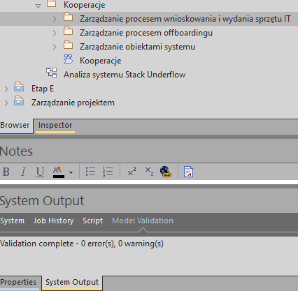
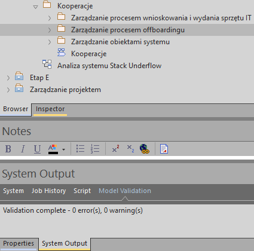
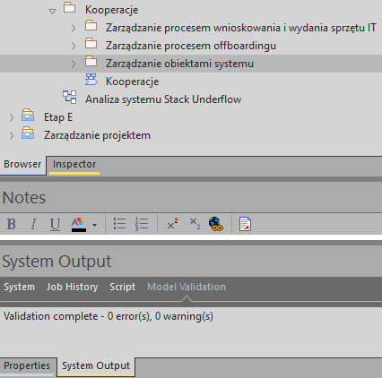

1.1 Raport walidacji modeli pakietu Zarządzanie procesem wnioskowania i wydania sprzętu IT

1.2. Raport walidacji modeli pakietu Zarządzanie procesem offboardingu

1.3. Raport walidacji modeli pakietu Zarządzanie obiektami systemu
